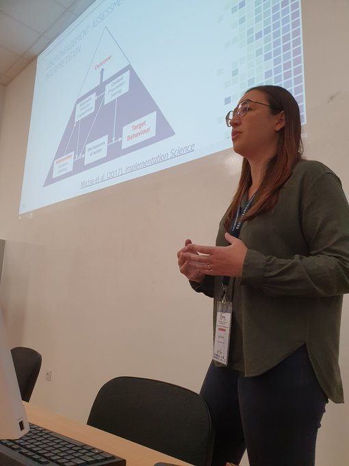
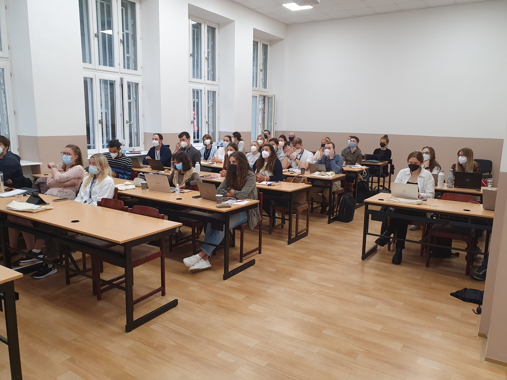
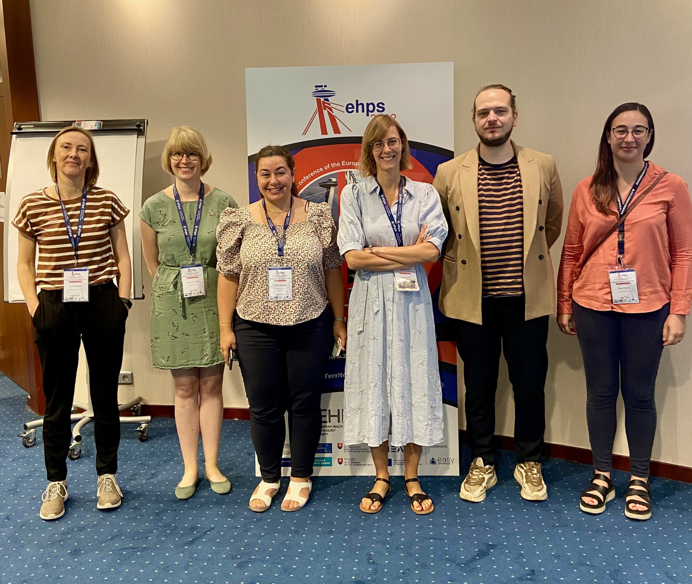
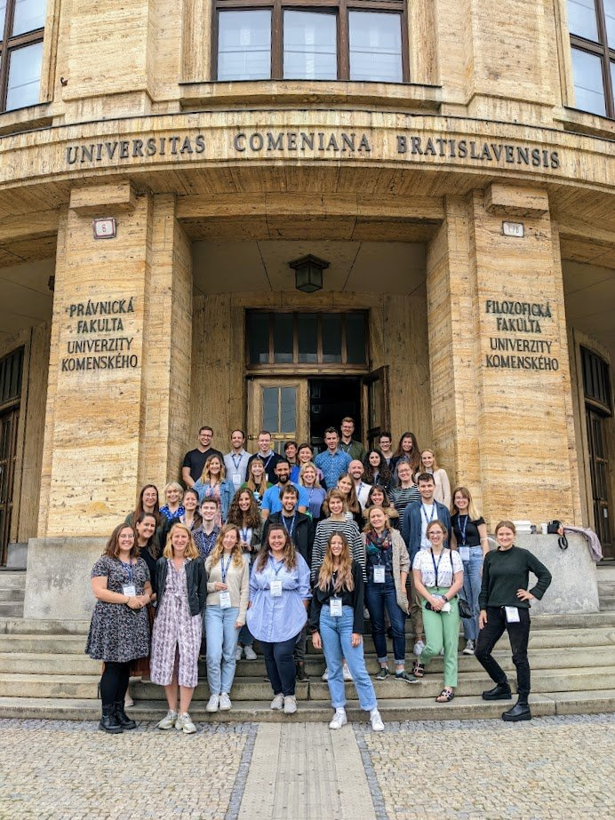

Teaching and supervision
Teaching
I regularly contribute to research-based, connected teaching by delivering lectures, seminars and workshops about smoking cessation, the principles of behaviour change, Ecological Momentary Assessment, and the development and evaluation of digital behaviour change interventions (including Just-in-Time Adaptive Interventions) to BSc, MSc and PhD students.
In 2023, I co-led a Virtual Exchange Seminar (5 ECTS) for MSc students at the University of Bern (Switzerland) and Tampere University (Finland) in collaboration with Dr Dario Baretta from the University of Bern, which focused on the development and evaluation of theory-informed digital behaviour change interventions.
As part of my Stage 2 Professional Qualification in Health Psychology (awarded in December 2019), I have led several half-day workshops on the principles of behaviour change to a diverse range of healthcare professionals (e.g. Tommy’s, Nesta, BPS Division of Health Psychology in Northern Ireland).


Supervision of PhD students
2022-2025
Tosan Okpako (UCL). Developing a virtual reality scenario for smokers unmotivated to quit. Funded by the UCL-Birkbeck MRC Doctoral Training Programme. [Subsidiary supervisor].
Corinna Leppin (UCL). Development and pilot evaluation of a just-in-time adaptive intervention to prevent smoking lapses. Funded by Cancer Research UK. [Subsidiary supervisor].
Please feel free to contact me regarding potential PhD supervision.
Supervision of MSc students
2021-2022
Jonas Montilva-Monsalve (MSc Behaviour Change, UCL). Evaluation of barriers and enablers to adopt a healthier diet using a digital app, in patients with type 2 diabetes for more than 1.5 years: qualitative study using the COM-B model and Theoretical Domains Framework. [Secondary supervisor].
2020-2021
Bruna Dimantas (MSc Behaviour Change, UCL). Exploring patients’ experiences of smartphone apps for Type 2 diabetes. [Secondary supervisor].
Alice Alphonse (MSc Behaviour Change, UCL). Exploring smokers’ experiences of a supportive chatbot embedded within a popular smartphone app. [Primary supervisor].
Tabatha Macelligott (MSc Health Psychology, UCL). Stay home and smoke? Associations between smoking and the Covid-19 pandemic: Cross-sectional findings from the HEBECO study in the UK. [Primary supervisor].
Trupti Jambharunkar (MSc Health Psychology, UCL). A virtual reality scenario on the health consequences of smoking: A pilot randomised trial with smokers unmotivated to quit. [Primary supervisor].
2019-2020
Maria Theodoraki (MSc Health Psychology, UCL). Associations between smoking to relieve stress, motivation to stop and quit attempts across the social spectrum: A population survey in England. [Primary supervisor].
Kezia Stewart (MSc Behaviour Change, UCL). A qualitative study of influences on engagement with a “quick response” and partially machine learning powered chatbot to help stop smoking. [Primary supervisor].
Fernanda Pacileo Trevisan (MSc Behaviour Change, UCL). Comparison of user engagement with health vs. non-health smartphone apps: A scoping review. [Primary supervisor].
Simon Long (MSc Behaviour Change, UCL). What Theories, Behaviour Change Techniques and Engagement Features Are Present in Scientifically Sound Behaviour Change Smartphone Applications For Physical Activity and Nutritional Intake? A Scoping Review. [Primary supervisor].
2018-2019
Karamjeet Taak (MSc Health Psychology, UCL). Exploring views on alcohol consumption and the acceptability of a novel digital intervention within the UK male Punjabi-Sikh community: A qualitative study. [Primary supervisor].
Erlina Rees (MSc Health Psychology, UCL). Pain and smokers’ status mediated by mental health: a cross-sectional investigation using the BBC Lab UK study. [Primary supervisor].
Astrid Nikiel (MSc Health Psychology, UCL). Personality trait typology of smoking and excessive alcohol use: a large online cross-sectional survey. [Primary supervisor].
2017-2018
Shuya Li (MSc Behaviour Change, UCL). Understanding Sleep Behaviour in Chinese College Students Studying in the UK and Evaluating their Engagement with ‘Habitica’: A Qualitative Study. [Secondary supervisor].
2016-2017
Elin Melander (MSc Clinical Psychology, Gothenburg University, Sweden). A smartphone-delivered intervention for insomnia: Does the addition of healthcare professional support influence user engagement? [Secondary supervisor].
Opportunities for learning and networking
I regularly create opportunities for learning and networking for other early-career researchers through organising events and webinars in my roles as Committee Member of the European Health Psychology Society’s Special Interest Group in Digital Health & Computer-Tailoring and Co-Director of the Open Digital Health initiative.
In 2022, Prof. Felix Naughton and I co-led the 2-day EHPS CREATE pre-conference workshop (“Digitalising Health Psychology Research to enhance our science”).
In 2023, Prof. Felix Naughton, Dr Monique Simons and I co-led the inaugural 2-day JITAI Winter School, which focused on the development, optimisation and evaluation of JITAIs for health behaviour change.

